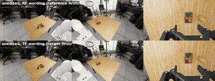

Draft for discussion · Cosmos3 Edge Policy: first results · GR00T N1.7: complete · π0.5: first results · 8 Nov 2026, 11:29 UTC
Where does weight-space programming fix failures?
NVIDIA Cosmos3 Edge Policy (world-action model) and NVIDIA GR00T N1.7 DROID (VLA on a Cosmos-Reason2-2B backbone), with OpenPI π0.5 as the control, on the same RoboLab DROID tasks T1–T8 and a retention task R1.
- Method. When a clearer wording of the same goal makes a robot model succeed, copy that wording's internal effect into the weights in closed form, one least-squares solve per layer: no training, and the instruction stays the same.
- π0.5, the control (earlier records). Distillation fixed its two language failures: T1 27 → 106 of 128 unseen starts (81 fixed, 2 broke, p = 7.2 × 10⁻²²) and T8 0 → 27 of 64; a random edit of the same size did nothing (9 vs 13 of 64); the T1 edit also lifted T2 and T3; no edit helped T4–T7.
- NVIDIA models. Cosmos3 Edge Policy: T8 edit 0 → 56 of 64 unseen starts; GR00T N1.7: T1 edit 9 → 0 of 32 practice starts (the ones it was built from). First finding: GR00T N1.7 succeeded on 5 of 16 starts under RoboLab's performance render preset and 16 of 16 under the default preset, so all three are compared under the default. Same tasks, slots, metrics and statistics; this brief refreshes as runs finish.

What weight-space programming did on each task, on unseen starts unless marked practice
| Row | Cosmos3 Edge Policyworld-action model | GR00T N1.7reasoning-backbone VLA | π0.5OpenPI VLA, control |
|---|---|---|---|
| T1 Cube then banana | T8 edit: 10 → 12 of 16 practice starts4 / 2; p = 0.69 | 9 → 0 of 32 practice starts0 / 9, p = 0.0039 | fixed: 27 → 106 of 128 earlier slotsdistilled edit; 81 / 2, p = 7.2 × 10⁻²²; shared slots, unedited: 5 of 16 |
| T2 Pick up the eyeglasses | T8 edit: 0 → 0 of 16 practice starts0 / 0; p = 1 | unedited 0 of 32not edited | T1 edit: 22 → 44 of 64 earlier slotsown edit 18 → 27 of 64, not significant |
| T3 Cube left of the bowl | T8 edit: 4 → 0 of 16 practice starts0 / 4; p = 0.12 | unedited 1 of 32not edited | T1 edit: 8 → 36 of 64 earlier slotsno own edit submitted |
| T4 Stack yellow on red | T8 edit: 12 → 14 of 16 practice starts3 / 1; p = 0.62 | unedited 0 of 16not edited | no gain earlier slotslookalike perception; no clear wording |
| T5 Mustard into the left bin | T8 edit: 8 → 0 of 16 practice starts0 / 8; p = 0.0078 | unedited 0 of 32not edited | no gain earlier slotsown edit 8 → 11 of 64; the grasp slips |
| T6 Stack three cubes | running | unedited 0 of 16not edited | no gain earlier slotsown edit 35 → 39 of 64 |
| T7 Pick up the flat box | T8 edit: 0 → 0 of 16 practice starts0 / 0; p = 1 | unedited 0 of 32not edited | no gain earlier slotsa missing skill; 0 of 64 unedited |
| T8 Mustard right of the raisin box, reference-first | 0 → 56 of 6456 / 0, p = 2.8 × 10⁻¹⁷ | unedited 0 of 32not edited | fixed: 0 → 27 of 64 earlier slotsdistilled edit; 27 / 0, p = 1.5 × 10⁻⁸ |
| R1 Retention task | 9 → 13 of 16 practice starts | unedited 28 of 32not edited | kept: 32 → 32 of 32 earlier slotscube into the bowl, T1 edit |
| Rendering: performance → default preset | running | 5 → 16 of 16Banana onto plate | running |
| Random control, same size | control 0, unedited 0, edit 56 of 64T8 | control 11, unedited 9, edit 0 of 32 practice startsT1 | 9 of 64 earlier slotsT1; unedited 13, edit 50 |
| Where to edit | text pathway 13, video-action (generation) pathway 0 of 16T8, 16 practice starts; unedited 0 | Cosmos-Reason2 backbone 0, diffusion action head 0 of 32T1, 32 practice starts; unedited 9 | VLM 55, action expert 20, head 0 of 64 earlier slotsT1; unedited 5; only the VLM edit transfers |
![Unedited success per task and model. Cosmos3 Edge Policy: T1 Cube then banana 10 of 16; T2 Pick up the eyeglasses 0 of 16; T3 Cube left of the bowl 4 of 16; T4 Stack yellow on red 12 of 16; T5 Mustard into the left bin 8 of 16; T7 Pick up the flat box 0 of 16; T8 Mustard right of the raisin box, reference-first 0 of 16; R1 Retention task 9 of 16. GR00T N1.7: T1 Cube then banana 9 of 32; T2 Pick up the eyeglasses 0 of 32; T3 Cube left of the bowl 1 of 32; T4 Stack yellow on red 0 of 16; T5 Mustard into the left bin 0 of 32; T6 Stack three cubes 0 of 16; T7 Pick up the flat box 0 of 32; T8 Mustard right of the raisin box, reference-first 0 of 32; R1 Retention task 28 of 32. π0.5: T1 Cube then banana 5 of 16; T2 Pick up the eyeglasses 18 of 64; T3 Cube left of the bowl 8 of 64; T4 Stack yellow on red 13 of 32; T5 Mustard into the left bin 8 of 64; T6 Stack three cubes 35 of 64; T7 Pick up the flat box 0 of 32; T8 Mustard right of the raisin box, reference-first 0 of 64; R1 Retention task 32 of 32.](fig/brief-failure-map.svg)
![Change in successes after each model's main edit, on every task, paired on the same starts. Cosmos3 Edge Policy: T1 +2: 10 → 12 of 16; T2 ±0: 0 → 0 of 16; T3 −4: 4 → 0 of 16; T4 +2: 12 → 14 of 16; T5 −8: 8 → 0 of 16 (significant); T7 ±0: 0 → 0 of 16; T8 +56: 0 → 56 of 64 (significant); R1 +4: 9 → 13 of 16. GR00T N1.7: T1 −9: 9 → 0 of 32 (significant). π0.5: T1 +79: 27 → 106 of 128 (significant); T2 +22: 22 → 44 of 64 (significant); T3 +28: 8 → 36 of 64 (significant); T4 +3: 14 → 17 of 32; T5 +5: 7 → 12 of 32; T6 +5: 14 → 19 of 32; T7 ±0: 0 → 0 of 32; R1 ±0: 32 → 32 of 32.](fig/brief-side-effects.svg)
Live page with every table, figure and record: ali-adeeb.com/weightsmith/cosmos · Paper: ali-adeeb.com/weightsmith/paper.pdf · Code and records: github.com/adeeb10abbas/weightsmith
Draft for discussion. Simulation only (RoboLab, Isaac Sim), one released checkpoint per model, shared slots 30000–30031 and 96000–96063 with identical initial scenes; π0.5 cells are earlier records on their own slots until its shared-slot runs land. Exact McNemar tests on paired starts.